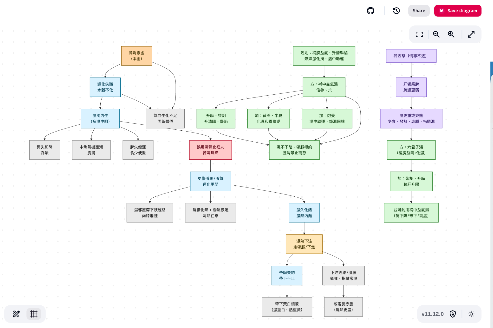

flowchart TD %% ========== Nodes ========== A[脾胃素虛<br/>（本虛）] --> B[運化失職<br/>水穀不化] B --> C[濕濁內生<br/>（痰濕中阻）] C --> D1[胃失和降<br/>吞酸] C --> D2[中焦氣機壅滯<br/>胸滿] C --> D3[脾失健運<br/>食少便泄] B --> D4[氣血生化不足<br/>面黃體倦] A --> D4 C --> E[誤用清氣化痰丸<br/>苦寒燥降] E --> F[更傷脾陽/脾氣<br/>運化更弱] F --> G[濕邪壅滯下肢經絡<br/>兩膝漸腫] F --> H[濕鬱化熱 + 陽氣被遏<br/>寒熱往來] F --> I[濕久化熱<br/>濕熱內蘊] I --> J[濕熱下注<br/>走帶脈/下焦] J --> K[帶脈失約<br/>帶下不止] K --> L[帶下黃白相兼<br/>（濕重白、熱重黃）] J --> M[下注經絡/肌腠<br/>腿腫、指縫常濕] M --> N[或兩腿赤腫<br/>（濕熱更盛）] %% ========== Treatment ========== T[治則：補脾益氣、升清舉陷<br/>兼燥濕化濁、溫中助運] --> P[方：補中益氣湯<br/>倍參、朮] P --> Q[加：茯苓、半夏<br/>化濕和胃降逆] P --> R[加：炮姜<br/>溫中助運、燥濕固脾] P --> S[升麻、柴胡<br/>升清陽、舉陷] S --> U[濕不下陷、帶脈得約<br/>腫消帶止而愈] Q --> U R --> U P --> U %% ========== Emotional factor branch ========== X[若因怒（情志不遂）] --> Y[肝鬱乘脾<br/>脾運更弱] Y --> Z[濕更重或夾熱<br/>少食、發熱、赤腫、指縫濕] Z --> AA[方：六君子湯<br/>（補脾益氣+化濕）] AA --> AB[加：柴胡、升麻<br/>疏肝升陽] AB --> AC[並可酌用補中益氣湯<br/>（視下陷/帶下/氣虛）]
2 Module 2 — 病因病機的邏輯實現
2.1 演練：將古今醫案按病因病機化
脾胃虛濕熱下注型帶下
一婦人吞酸胸滿。食少便泄。月經不調。服清氣化痰丸。兩膝漸腫。寒熱往來。帶下黃白。面黃體倦。此脾胃虛濕熱下注。
用補中益氣倍參、朮。加茯苓、半夏、炮姜而愈。
若因怒。發熱少食。或兩腿赤腫。或指縫常濕。用六君加柴胡、升麻。及補中益氣。
成果目標：

2.2 操作順序
2.2.1 步驟 1：Prompt 練習 1 — 病因病機拆解
請以病因病機的角度來拆解此案
{脾胃虛濕熱下注型帶下
一婦人吞酸胸滿。食少便泄。月經不調。服清氣化痰丸。
兩膝漸腫。寒熱往來。帶下黃白。面黃體倦。此脾胃虛濕熱下注。
用補中益氣倍參、朮。加茯苓、半夏、炮姜而愈。
若因怒。發熱少食。或兩腿赤腫。或指縫常濕。用六君加柴胡、升麻。及補中益氣。
}2.2.2 步驟 2：Prompt 練習 2 — 以彩色 Mermaid 語法輸出
請以彩色 mermaid 語法輸出2.2.3 成果範例
2.2.4 步驟 3：複製語法，貼入渲染平台
線上渲染：mermaid.live
推薦 Notion，裡面自己就有渲染 Mermaid 語法的功能
啟用方式：打
/找mermaid
2.2.5 步驟 4：成果目標
2.2.6 步驟 5：混合 Module 1 的技巧
請以 infographic 的生圖，以專業可愛風格，水豚君教授小白豬助理為輔助
{ mermaid 語法貼入 }成果：

2.3 什麼是 Mermaid？
Mermaid 是一種基於 Markdown 啟發式語法的工具，主要用於將文字程式碼快速轉換成各種圖表和流程圖。
簡介：
Mermaid 是一種 JavaScript 架構的圖表繪製工具，它允許您使用簡單、可讀性高的文字代碼來定義圖表結構，然後將這些代碼「渲染」成視覺化的圖形。
在文件中的應用：
在 Module 2 中，Mermaid 語法作為「結構化病機思考」的輸出工具：
- 目的： 將古今醫案中複雜的病因、病機、誤治與治療分支等邏輯關係視覺化
- 方式： 透過撰寫文字程式碼（例如
flowchart TD後定義節點和箭頭） - 結果： 輸出為清晰的邏輯流程圖，以視覺化的方式呈現病理演變
- 操作平台： mermaid.live 或 Notion